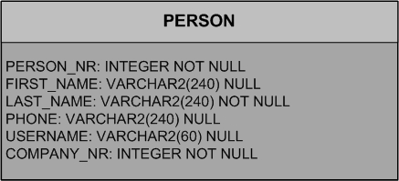

| Write the second page | ||
|---|---|---|
| | |
| Add a form to edit the data | Reorganize the tree | |
We already have a page for companies. Quickly create a second top-level page for persons. Then reuse the same page as child page for the existing company page.
Here are some notes to guide you:
Add getPersonTableData to the StandardOutlineService. Use SELECT PERSON_NR, LAST_NAME, FIRST_NAME FROM PERSON as your SQL statement.

If you edited StandardOutlineService manually, make sure to add getPersonTableData to the interface IStandardOutlineService as well.
getPersonTableData doesn't need a parameter, unless you want to create a PersonSearchForm as well; you don't need to do this for the tutorial, but it might be an excellent excercise
Add a New Page... to Child Pages of the StandardOutline; it uses the AbstractPageWithTable template, has the name Person and the type name PersonTablePage
This is how the StandardOutline has two child pages, now:
protected void execCreateChildPages(Collection<IPage> pageList) throws ProcessingException {
CompanyTablePage companyTablePage = new CompanyTablePage();
pageList.add(companyTablePage);
PersonTablePage personTablePage = new PersonTablePage();
pageList.add(personTablePage);
}
This is how the PersonTablePage loads data from the outline service:
@Override
protected Object[][] execLoadTableData(SearchFilter filter) throws ProcessingException {
return SERVICES.getService(IStandardOutlineService.class).getPersonTableData();
}
Add the following columns to the table inside the PersonTablePage:
| Table Column Template | Name | Type Name | Note |
|---|---|---|---|
| Long Column | (empty) | PersonNrColumn | not displayable |
| String Column | Last Name | LastNameColumn | width 200 |
| String Column | First Name | FirstNameColumn | width 200 |
Return to the CompanyTablePage, click through to Child Page, and pick Add Existing Page... (we don't need to create a new page because we want to reuse the person table page), and pick PersonTablePage.
If you test your application now, you will see the complete list of people under every single company. What you're missing is a way to pass the currently selected company to the SQL statement selecting the persons.
This is what we want, basically:
First, return to the PersonTablePage, click through to Variables, and pick New Property Bean... from the context menu. Use CompanyNr for the Name and use Long for the Bean Type.

But how do we set it? We need to set the CompanyNr when the person table page is being created by its parent. Return to the CompanyTablePage and click on the Exec Create Child Page link in the Properties view. Change it as follows:
@Override
protected IPage execCreateChildPage(ITableRow row) throws ProcessingException {
PersonTablePage childPage = new PersonTablePage();
childPage.setCompanyNr(getTable().getCompanyNrColumn().getValue(row));
return childPage;
}
Notice how we get to use the row argument.
So now, as the person table page instance is created, it "knows" what its company is. It's stored in the CompanyNr variable. Now all we need to do is pass this number on to the outline service.
Go to the PersonTablePage and click on Exec Load Table Data in the Properties view. Change its definition as follows:
@Override
protected Object[][] execLoadTableData(SearchFilter filter) throws ProcessingException {
return SERVICES.getService(IStandardOutlineService.class).getPersonTableData(getCompanyNr());
}
You'll note that this produces an error because the outline service is not yet ready to accept an extra parameter!

Return to the StandardOutlineService and click on IStandardOutlineService to change the interface for getPersonTableData as follows:
public Object[][] getPersonTableData(Long companyNr) throws ProcessingException;
Now go to the StandardOutlineService and change its definition of getPersonTableData as follows:
public Object[][] getPersonTableData(Long companyNr) throws ProcessingException {
if (companyNr == null) {
return SQL.select("SELECT PERSON_NR, LAST_NAME, FIRST_NAME FROM PERSON");
} else {
return SQL.select("" +
"SELECT PERSON_NR, LAST_NAME, FIRST_NAME" +
" FROM PERSON WHERE COMPANY_NR = :companyNr",
new NVPair("companyNr", companyNr));
}
}
Done!
Notice how we used NVPair to match a bind variable with a variable value. When we wrote our first form we just used the form data object to provide the bind variables, relying on the naming conventions. Here, we can no longer do that and need to be explicit about it.
Test it. Make sure you restart the server since you changed the services.
|  | |
| Add a form to edit the data | Reorganize the tree |